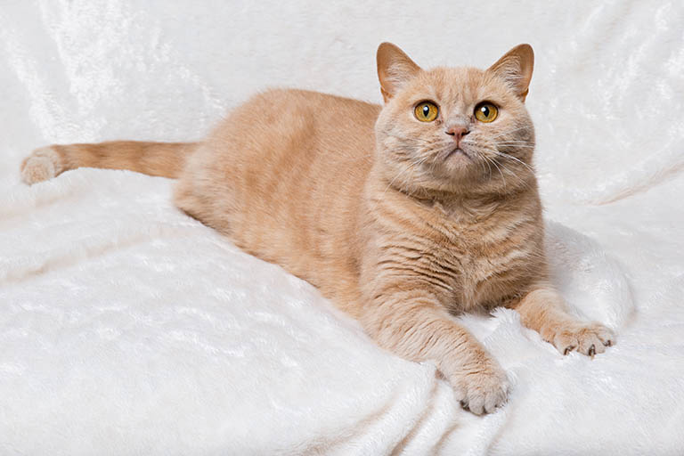
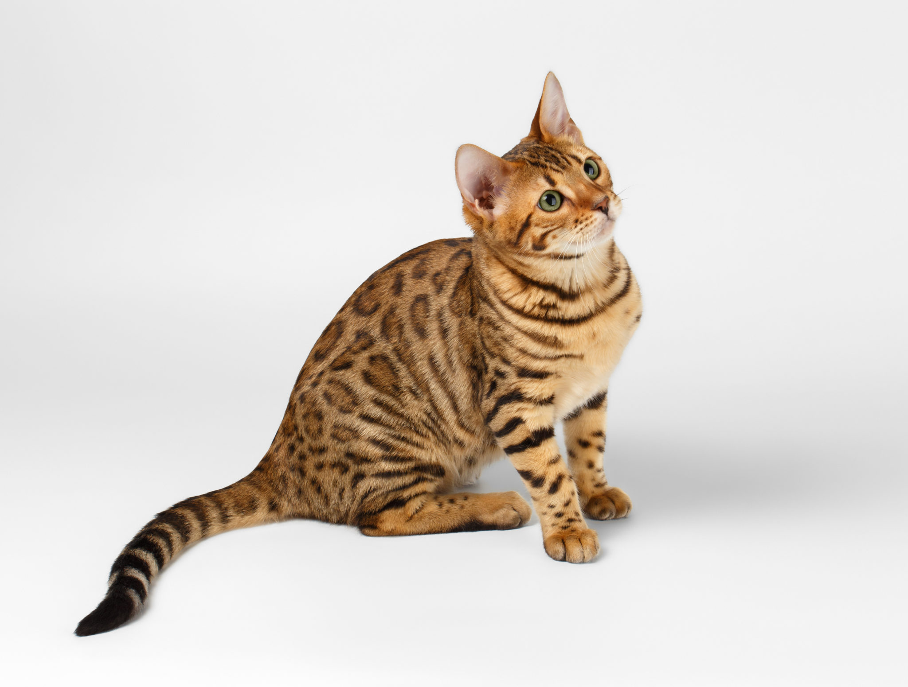
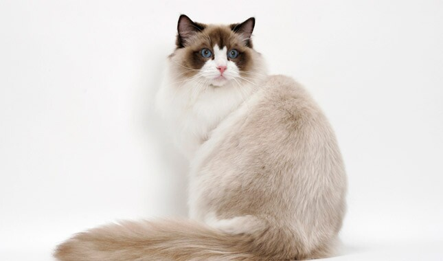
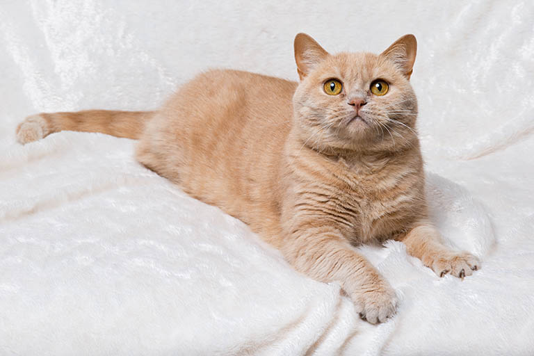
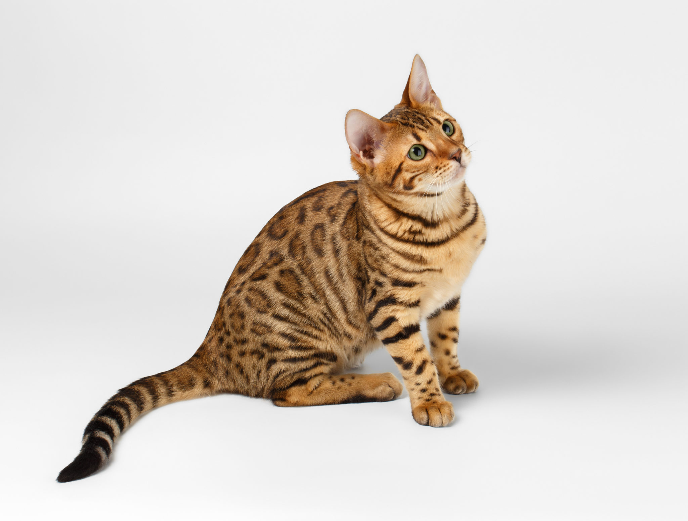
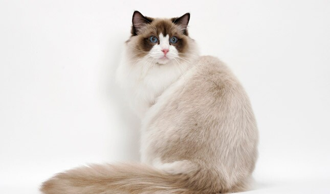

Information about cats
Cats are believed to be the only mammals who don't taste sweetness.
Cats are nearsighted, but their peripheral vision and night vision are much better than that of humans.
Cats are supposed to have 18 toes (five toes on each front paw; four toes on each back paw).
Cats can jump up to six times their length.
The average lifespan for a pet cat is probably around 13 to 14 years.
However, although their lifespan varies,
a well cared for cat may commonly live to 15 or beyond,
some make it to 18 or 20 and a few extraordinary felines even pass 25 or 30 years of age.
The below are few of the cat breeds you can find:
The Maine Coon is the largest of all cat breeds and has a muscular body and sturdy legs. The head has a square muzzle and large ears, which are wide at the base and set high. The long and thick coat consists of underwool covered with glossy, waterproof overcoat. The fur is shorter on the head, neck and shoulders and longer on the back, sides and tail. On the belly and hind legs, the fur is thick and shaggy. The neck collar is stronger on males than on females. The tail is long and bushy and the ears have tufts on the tip. The fur on the paws has a "snowshoe" effect. The Maine coon comes in thirty or more colors. The eyes can be green, gold or copper colored; white cats can have blue or different colored eyes.
The Ragdoll is a large, powerful and impressive breed with a distinctive pattern. However, it is an incredibly calm and relaxed cat that gives the impression of a ragdoll ("ragdoll" in English). The broad head is flat on top and the ears are set far apart. The eyes are deep blue and large. The body is long and muscular with a broad chest, short neck and robust legs. The tufted paws are large and round, and the tail is long and bushy. The Ragdoll's thick coat is silky and medium to long, and adult cats should have a collar and long hair on their hind legs. Ragdoll can have three different fur patterns and each pattern is available in four colors. There is also a type that has extra white markings on the paws, chin and chest.
The Bengal cat is a domesticated cat breed created from hybrids of domestic cats, especially the spotted Egyptian Mau, with the Asian leopard cat (Prionailurus bengalensis). The breed name comes from the leopard cat's taxonomic name. Bengals have a wild appearance; their golden shimmer comes from their leopard cat ancestry, and their coats may show spots, rosettes, arrowhead markings, or marbling. They are an energetic breed which needs much exercise and play.
The British shorthair cat is a medium-to-large-sized cat breed with a short, dense coat and a distinctive rounded head and face that make it look a lot like a cuddly teddy bear. The British shorthair cat is sweet and affectionate without being needy or clingy. This breed hails from the United Kingdom where it developed naturally and was the regio's original domestic shorthaired cat. Originally, many British shorthairs were blue colored (a gray hue), but today's British shorthair comes in a veritable rainbow of colors and patterns, including solid, bicolor, tabby, tortoiseshell, calico, and more.